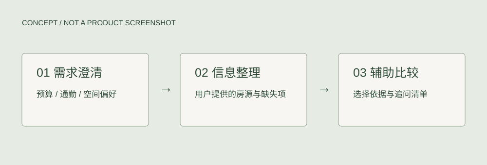

Studio C 延伸 / AI辅助分析与 Agent探索
租房需求 Agent
从 Studio C 的居住场景研究延伸，探索 AI 辅助分析与租房需求 Agent。目前推进至未接通 API 的探索阶段。

项目关系
Studio C 的居住场景研究提供了空间与需求背景，AI 辅助分析和租房 Agent 是在这个基础上的延伸探索。
查看 Green Stitch / Studio C 研究 ↗从居住研究到租房需求
如何把租房者对预算、通勤、空间使用和生活习惯的描述，整理为清晰的需求和取舍依据？这是从居住研究延伸的探索问题，尚未完成用户验证。
拟议的辅助流程
- 澄清需求
计划通过对话整理限制条件、偏好与优先级。
- 组织房源信息
计划整理用户提供的房源信息，标明缺失内容。
- 辅助比较与追问
计划输出比较框架及需要进一步确认的问题，帮助用户做选择。
下一步迭代
在已有探索基础上，进一步明确真实租房场景和任务范围，补充原型与 AI 辅助分析过程，完成 API 接入后再测试交互与输出。研究方法、实现范围和评估标准将在推进中记录。
当前 API 尚未接通。已实现功能将依据原型代码与截图逐项说明，目前不宣称已具备联网分析、房源接入或完成用户测试。